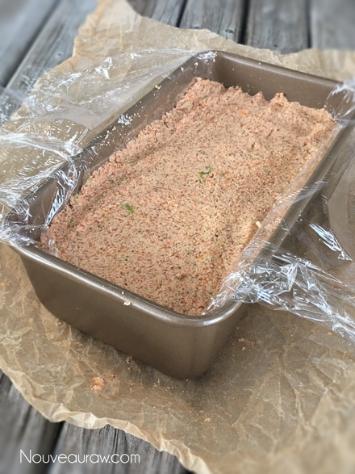
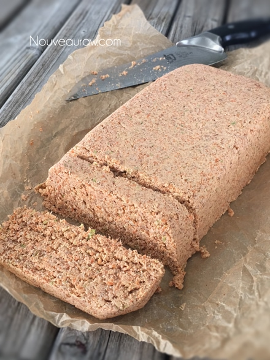
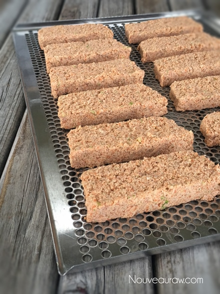

Almond Toast

There’s something oddly grounding about a good piece of toast. Maybe it’s the crunch, the warmth, or the quiet little ritual of making it. Whatever it is, toast has a way of making us feel… settled. And over the years, I’ve realized: toast is deeply personal. People have opinions. Strong ones. And honestly? They should.
Personally, I’ve always loved a thick slice of dense, hearty bread—golden and crunchy on the outside, but still with a soft, chewy pocket of comfort in the middle. I once read (or maybe dreamed?) that the perfect slice of toast should be twelve times crunchier on the outside than it is in the center. I don’t know who said it, but they understood the assignment.
This particular Almond Toast was inspired by the lovely folks at Café Gratitude. After lots of experimenting (and even more taste testing—you’re welcome), I found my sweet spot. And here’s the secret: it all comes down to how it’s dehydrated.
Now, let’s talk about dehydrated raw foods. People tend to go a little overboard. They dry things to the point where there’s not a drop of moisture—or joy—left. That might work for fruit leathers or snacks meant to survive a three-day hike (or your last relationship), but for toast? We want flavor. Life. Soul.
Raw food isn’t about turning ingredients into edible fossils. It’s about keeping them vibrant and fresh. Sure, I love a good pantry stash—especially with Bob grazing through the kitchen like a happy bear—but that doesn’t mean tossing everything in the dehydrator and walking away. You wouldn’t leave something in the oven for six hours and hope for the best. (At least, I hope you wouldn’t.)
So, when you make this toast for the first time, designate one slice as your “tasting toast.” Around hour three or four, take a bite. Too soft? Too dry? Just right? Keep testing until you hit that magic moment where your taste buds go ahhh. Then jot down the timing like a proud scientist. That’s your golden hour.
And here’s the fun part: depending on how long you dehydrate it, this toast can play many roles. Dry it all the way and you’ve got a crunchy, biscotti-style snack—perfect with a cozy mug of Golden Turmeric Almond Milk or crumbled over a salad instead of croutons. Or go softer, spread it with jam or raw honey, and enjoy the coziest breakfast imaginable.
That’s the beauty of raw food: one recipe, infinite personalities. Toast, snack, crouton, biscuit… even dessert. No judgment here.
I hope you enjoy this recipe as much as I’ve loved making (and remaking) it. So here’s to creativity, mindfulness, and the humble slice of toast.
With crunchy blessings, amie sue
Ingredients:
Yields 12 slices (-/+)
- 1/2 cup (75 g) raw almonds, soaked
- 2 cups (400 g) almond pulp
- 1/2 cup (52 g) ground flax seeds
- 1 cup (110 g) veggie pulp (5 carrots, 1 stalk of broccoli)
- 1 tsp (3 g) garlic powder
- 1 tsp (7 g) Himalayan pink salt
- 1/2 – 1 (116 g – 231g) cup carrot juice
Preparation
1. Chop Up Those Almonds
After their soak, give the almonds a good rinse and drain. Pop them into a food processor fitted with the “S” blade and pulse until they’re broken down into small, coarse bits — think chopped nuts, not almond flour. We’re going for texture here.
2. Add the Good Stuff
Toss in the almond pulp, flax, veggie pulp, garlic, and salt. Pulse just enough to combine — we’re mixing, not puréeing.
3. Pour in the Carrot Juice
Start with ½ cup of carrot juice. If the mixture feels too dry, add more slowly until it comes together like a soft bread dough. It should be moist enough to hold its shape but not so wet it slumps into a sad little puddle.
4. Prep Your Dehydrator Trays
Line one or two dehydrator trays with mesh sheets. These help air circulate, so your toast dries evenly and doesn’t end up soggy on one side.
5. Shape the Dough
For a nice, uniform loaf shape, line a 4½ x 8¼” pan with plastic wrap and press the dough in firmly. Flip it out onto a cutting board, and voilà — a tidy little loaf. Prefer a more rustic vibe? Shape it by hand. No judgment here.
6. Slice It Up
Cut the loaf into slices about ½” thick and arrange them on your dehydrator trays.
7. Dry It Out
Start dehydrating at 145°F for one hour — this helps set the crust and prevents any unwanted fermentation. After that, lower the temp to 115°F and let it dry until the slices are crisp and completely moisture-free.
Pro Tip: This bread is meant to be crunchy, not soft. But hey — you’re the toast boss. Taste as you go, and if you prefer a little softness in the middle, feel free to pull it early. Also, don’t worry if the color shifts while drying — totally normal and part of the charm.
Storage Tips
Once fully dry and cooled, store your toast in an airtight container. It should keep well for a week or two (unless it mysteriously vanishes — which is known to happen).
A Few Extra Notes
-
Why start at 145°F?
It might sound high for raw foods, but there’s a good reason for it. It helps jumpstart the drying without cooking the inside. Curious? [Click here to read more.]
-
No dehydrator? No problem.
You can absolutely use your oven if needed. [Here’s how to do that.] That said, if you’re into raw foods, I do recommend investing in a dehydrator. [Here’s the one I use and love.]



© AmieSue.com